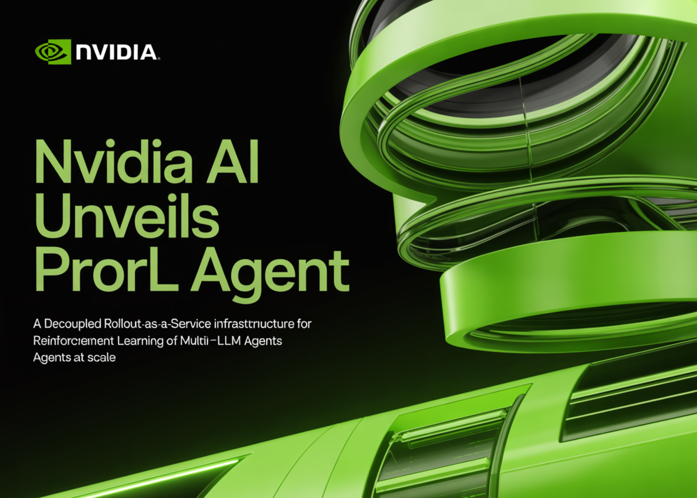
NVIDIA
NVIDIA给Agent加上硬件看门狗
来源: NVIDIA · 2026-09-29 · 原文链接
NVIDIA发布Open Agent Safety Platform：开源OpenShell在CPU侧为智能体建立安全运行时，追踪动作并执行策略；Sentry参考设计则运行在BlueField-4 DPU的独立信任域，持续观察Agent，一旦越过软件边界可在毫秒级隔离。OpenShell可扩展到Arm和Intel平台，NVIDIA称已有超过100家机构参与；部分能力仍处于不同开发阶段，时间表不构成承诺。
Janet 锐评：
安全终于不再只写在Agent自己的提示词里。让一个可能被攻击、被诱导的系统同时负责工作和监督自己，本来就像让司机兼任测速摄像头；OpenShell与Sentry的关键，是把制动权移到它碰不到的层。伙伴名单长度不是重点，企业能否看见完整审计轨迹、怎样处理策略冲突，以及隔离动作会不会误伤正在运行的业务，才是检验标准。
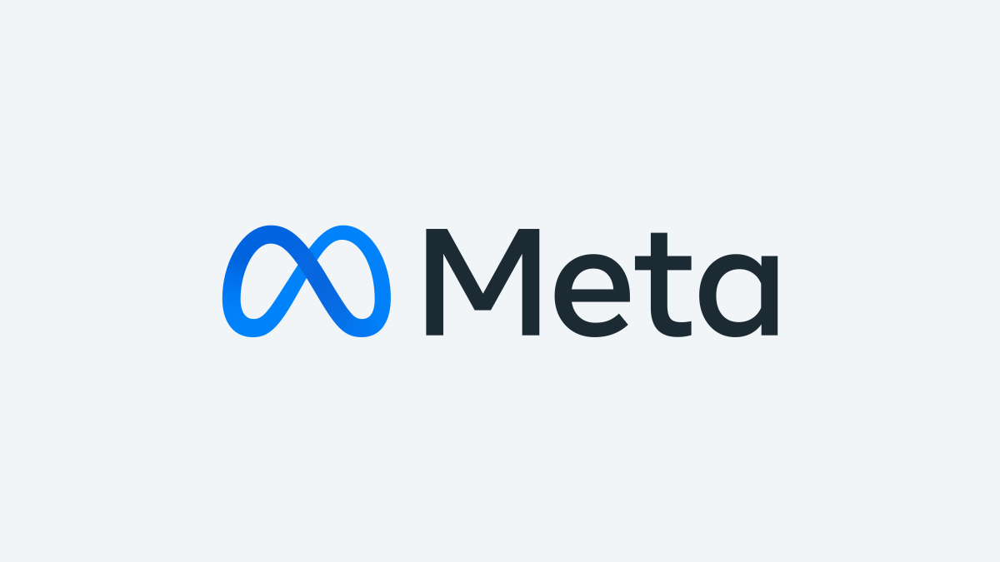
Meta
Meta推出企业AI新支柱
来源: Meta · 2026-09-29 · 原文链接
Meta宣布启动Meta Enterprise Platform，计划把Muse agent、Meta Business Agent、Muse API、Muse Code等模型与Agent能力提供给企业和开发者。前MongoDB CEO兼总裁Chirantan“CJ”Desai出任Chief Enterprise Platform Officer，直接向扎克伯格汇报。公告给出产品方向与负责人，但没有披露定价、客户名单或大规模可用时间。
Janet 锐评：
Meta过去最懂的是把流量送到商家门口，现在它想进入商家后厨。广告、消息和数亿企业关系确实是入口优势，可企业软件不只拼分发，还拼权限、迁移、服务和十年可追责性。CJ Desai的任命比“超级智能”宣言更具体：Meta知道这场仗要靠企业软件的老手打，而不是靠一次模型发布会赢。
AP
两家前沿实验室向政界发出警报
来源: AP · 2026-09-29 · 原文链接
美联社报道，Anthropic与OpenAI的高层正更公开地向美国政界警告高级AI风险，讨论模型失控、国家安全与监管准备。报道的重点不是一项已经落地的新法规，而是前沿实验室把风险沟通从技术社区推向政策议程；各家公司在具体监管强度与商业利益上仍并不一致。
Janet 锐评：
同一批公司一边竞速、一边提醒裁判赛道可能会塌，听起来矛盾，却比沉默诚实。问题在于警报如果没有共同评测、事故披露和外部访问权，很容易变成只有公司自己能解释的风险叙事。
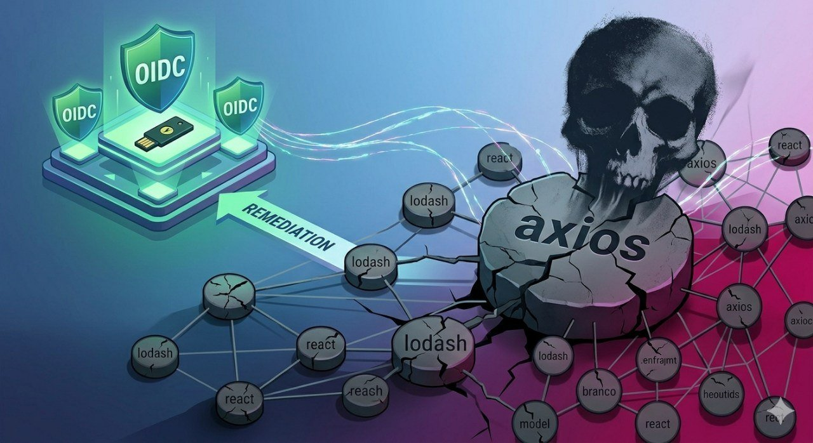
Axios
AI先驱发问“智能爆炸”如何刹车
来源: Axios · 2026-09-29 · 原文链接
Axios报道，多位AI先驱围绕递归自我改进发表白皮书，讨论系统能否通过改进自身研究与开发流程形成快速能力跃迁，以及现有治理手段是否来得及响应。论文属于风险分析与预案，不是对“智能爆炸已经发生”的证明；它把可观测指标、决策阈值和应急机制重新推到研究议程中央。
Janet 锐评：
这类讨论最容易滑向科幻，也最容易因为像科幻而被忽略。重点不在预测某一天机器突然醒来，而在提前约定：哪些能力增长算异常、谁有权暂停、暂停后怎样验证。没有阈值的担忧只是情绪；没有执行权的阈值只是仪表盘。
Tempus AI
Tempus获FDA批准筛查瓣膜病
来源: Tempus AI · 2026-09-29 · 原文链接
Tempus获得美国FDA 510(k)许可，其ECG-MR AI产品可从标准12导联心电图中识别可能尚未确诊的二尖瓣反流。公司称这是其第四个获FDA许可的ECG-AI产品，覆盖心律失常、心功能、肺血管和瓣膜疾病。许可代表可按批准用途上市，并不等于替代超声或临床诊断。
Janet 锐评：
把低成本心电图变成筛查入口，价值在于把“可能漏掉的人”更早送去做正确检查。医疗AI最怕把筛查写成诊断；这条消息的分量恰恰来自边界清楚——它负责提示，不负责替医生盖章。
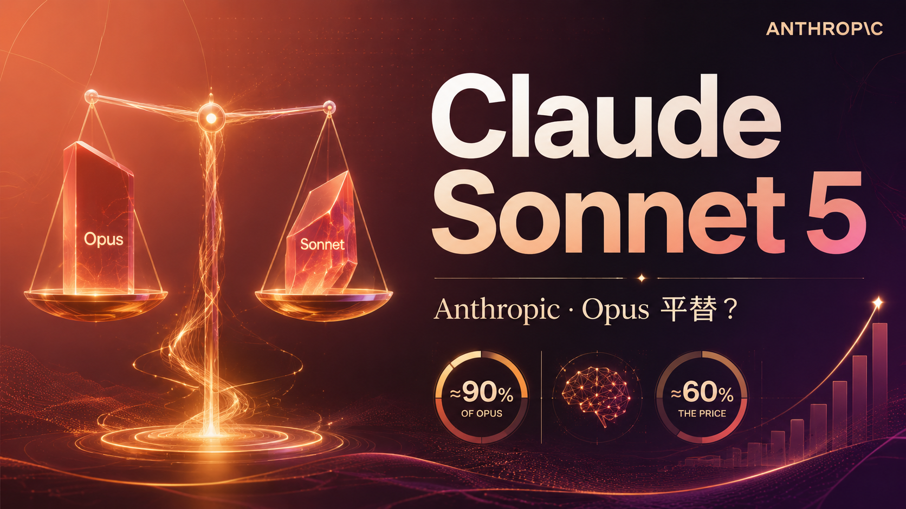
Anthropic / AWS
Claude Sonnet 5.5降价三成还提速三成
来源: Anthropic / AWS · 2026-09-29 · 原文链接
Anthropic发布Claude Sonnet 5.5，称相较Sonnet 5，多数工作的运行速度提高30%，成本最高降低30%，重点面向范围明确的编码与知识工作。AWS同日宣布该模型进入Amazon Bedrock与Claude Platform on AWS，可接IAM、CloudTrail、CloudWatch和Bedrock Guardrails；厂商描述的“每项任务成本”仍取决于实际提示、工具调用与完成率。
Janet 锐评：
模型价格继续下压，但这次更值得记住的是定位：Opus拿判断题，Sonnet拿范围清楚的执行题。团队若还用“最强模型包办一切”，省下的单价会被多余推理吞回去。真正的成本优化不是降级，而是把任务边界写得足够清楚，让便宜模型也能一次做完并自检。
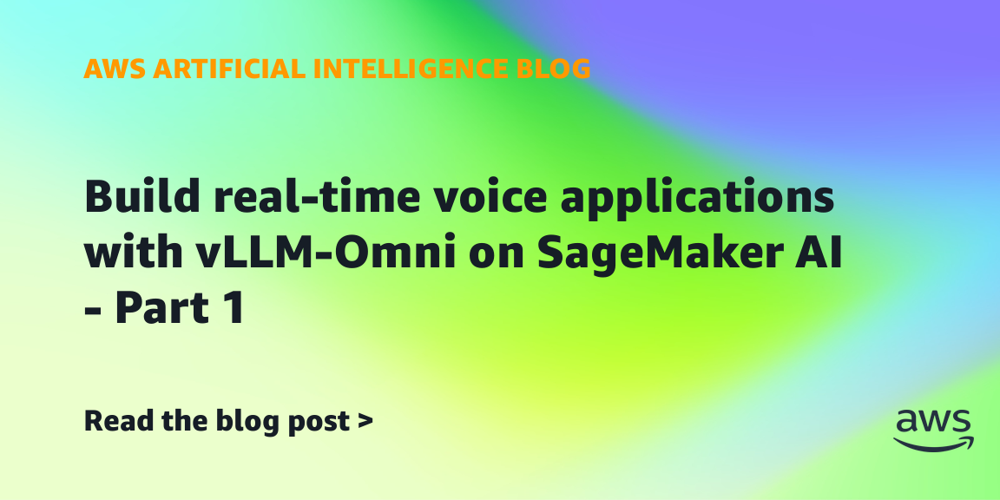
AWS
vLLM-Omni让语音边生成边播
来源: AWS · 2026-09-29 · 原文链接
AWS发布vLLM-Omni在SageMaker AI上的实时语音教程：用同一条持久双向连接向Qwen3-TTS发送文本并接收24kHz PCM音频分块，模型可在整段语音生成完成前开始播放。示例使用vLLM-Omni 1.5容器、JumpStart模型和Gradio客户端，并通过实例池在多种GPU实例间按优先级找容量。
Janet 锐评：
语音Agent的体感常死在那几秒沉默里。流式输出缩短等待很实用，但实例池回退会改变小时成本，克隆音色也带来授权问题；“能开口”只是第一关，延迟、费用和声音权利得一起算。
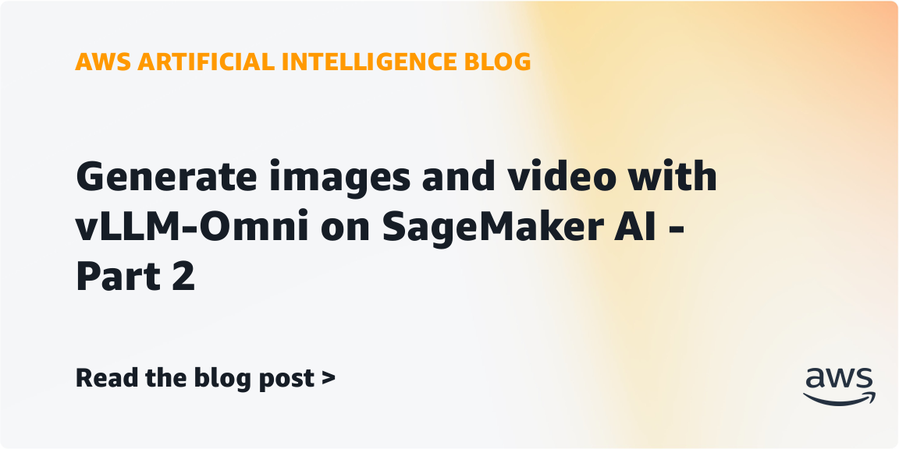
AWS
AWS用vLLM容器串起图像与视频
来源: AWS · 2026-09-29 · 原文链接
AWS展示用同一套vLLM-Omni容器分别部署FLUX.2-klein-4B实时图像端点和Wan2.1-VACE-1.3B异步视频端点。流程先返回PNG，再把压缩后的参考图与动作提示上传S3，异步生成并取回MP4；统一容器减少服务栈差异，但图像与视频仍分开部署和计费。
Janet 锐评：
统一的是服务方式，不是算力成本。把图像和视频放进同一套OpenAI兼容接口，确实能少维护一层胶水；可视频仍要异步、仍要S3、仍要单独端点。好工具的诚实之处，是把复杂度摆到正确的位置，而不是假装它消失了。
Modulate
Modulate用一百多个模型听懂声音风险
来源: Modulate · 2026-09-29 · 原文链接
音频AI公司Modulate融资2500万美元，总融资达到6000万美元。公司称Velma系统由100多个专用模型组成，已处理累计6亿小时音频、每月约1000万小时，批处理价格每小时0.03美元；其深伪检测98.9%、准确率翻倍和误报减少7倍等数字均为公司口径，覆盖反欺诈、语音Agent监督和信任安全。
Janet 锐评：
声音安全不是把录音转成文字再跑一次分类。语气、重叠说话、环境声和伪造痕迹都在文本之外，Modulate押的是这层原生信号。公司数字很亮，但客户更该问误报落在哪些口音、语言和场景；一次错误拦截，可能就是一个真人被系统判成骗子。
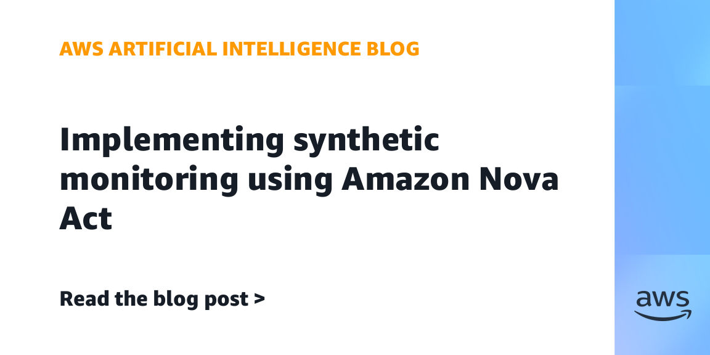
AWS
Nova Act开始巡检真实用户旅程
来源: AWS · 2026-09-29 · 原文链接
AWS给出Nova Act与Bedrock AgentCore的合成监控方案：EventBridge定时触发Agent，在隔离浏览器中按自然语言执行登录、搜索、购物车和结账等旅程，失败时经SNS告警。Nova Act依靠页面截图而非CSS选择器，AWS称早期企业用例浏览器流程准确率超过90%；示例六步旅程通常需2至4分钟，并建议关键步骤显式断言与按需重试。
Janet 锐评：
传统监控告诉你服务器活着，用户却可能已经买不了东西。让视觉Agent真正走一遍结账，终于把“系统正常”拉回人的体验；但90%不是可以忽略的尾数，五分钟跑一次就会把偶发识别失败放大成告警风暴。监控Agent也需要被监控，尤其要区分页面坏了、模型看错了，还是账号和网络出了问题。
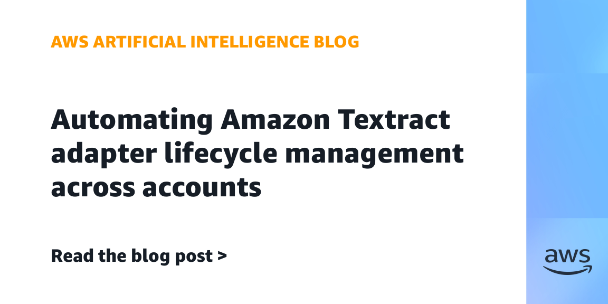
AWS
Textract适配器也得走版本晋升
来源: AWS · 2026-09-29 · 原文链接
AWS提出跨账户管理Textract Custom Queries适配器的生产模式：先从文档文本识别版本，再从Parameter Store读取对应Adapter ID，随后调用同步或异步分析；开发、测试、预生产和生产环境通过复制与CI/CD晋升。CloudFormation尚不能原生创建适配器，文章用CLI、自定义资源或Terraform local-exec填补缺口，并明确这只是临时方案。
Janet 锐评：
表单一改版，抽取模型就可能悄悄读错。把适配器版本从业务代码里拆出来，是不性感却必要的工程；文章也没有粉饰Terraform缺口。比“AI读懂文档”更难的，是几年后还能说清哪一版模型读了哪一张表。
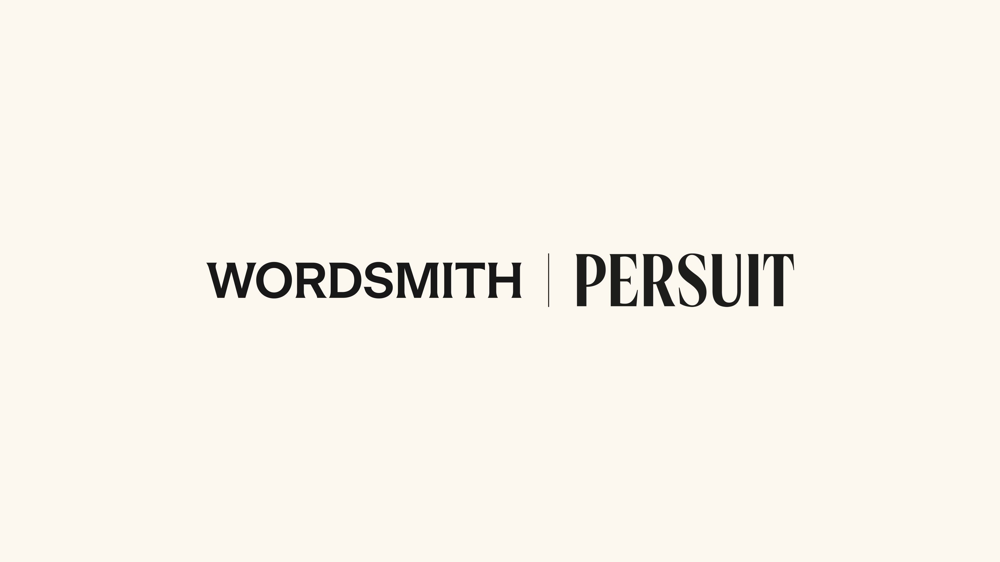
Wordsmith / PERSUIT
法务AI第一次给内部劳动标价
来源: Wordsmith / PERSUIT · 2026-09-29 · 原文链接
Wordsmith与PERSUIT宣布合作：Wordsmith处理企业内部法律请求，PERSUIT用超过250亿美元的律师事务所报价数据，为本可外包的同类事项提供市场价格参考。双方称PERSUIT覆盖1.6万件事项与5万份律所报价，Wordsmith服务超过500个内部法务团队；节省比例与收入增长来自公司披露，尚非独立审计。
Janet 锐评：
过去法务部门容易只被看见花了多少钱，没送出去的工作反而没有价格。这套连接至少让“AI省了多少”有了对照组，但市场报价不等于内部价值：复杂判断、关系成本和风险承担不能全压成美元。数字能让法务进董事会，别让数字又把专业判断赶出去。
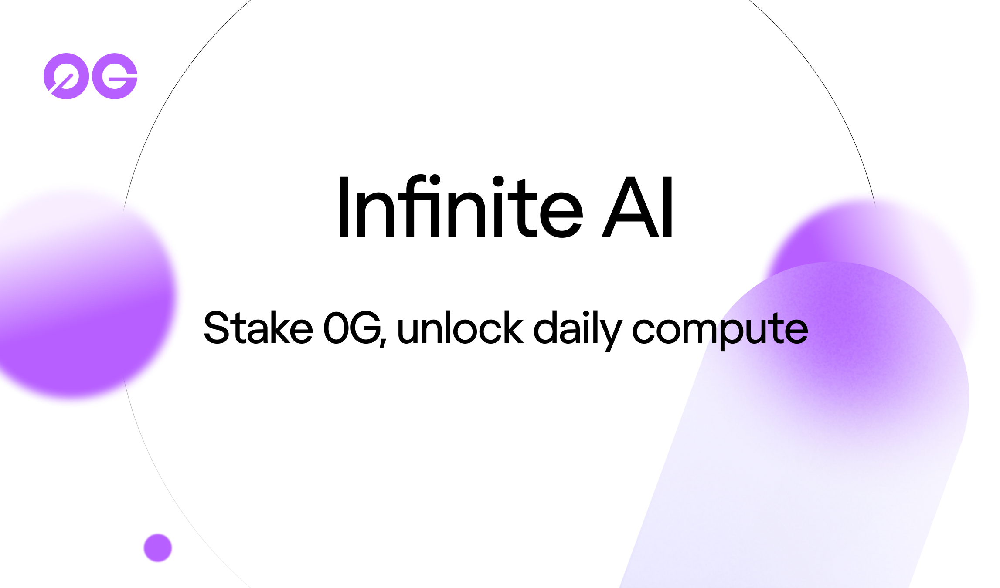
0G
0G推出质押换算力额度
来源: 0G · 2026-09-29 · 原文链接
0G推出Infinite AI：用户锁定a0G铸造并质押iAI，在初始参数下每枚iAI每天获得1.271个计算额度，标称价值超过1美元，可用于0G Private Computer等服务。发行方预铸2000枚，公开铸造计划于9月29日09:00 UTC开始，目标与上限为9270枚；额度每日刷新不结转，数字资产价格、地区资格和产品条款都可能变化。
Janet 锐评：
它把云账单、质押收益和代币价格拧在了一起，听上去像“持有算力”，实际仍是一组会变的条款。每天额度不结转、赎回有冷却、资产价格浮动；算力从月租变成金融产品后，理解成本没有下降，只是从工程师转移到了财务和法务。
今日核心预测
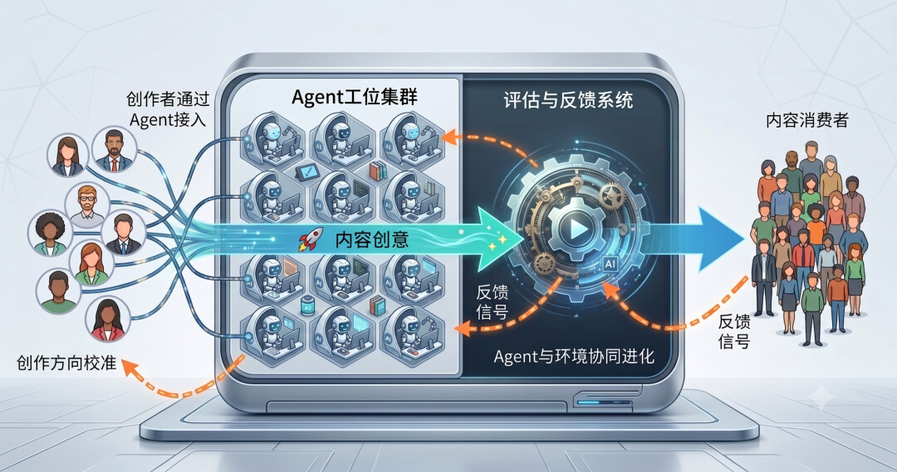
Instinct / Business Wire
Instinct十亿美元押注私人Agent
来源: Instinct / Business Wire · 2026-09-29 · 原文链接
仍处早期访问阶段的个人Agent公司Instinct完成10亿美元C轮融资，投资方包括Sequoia、Benchmark与Coatue，估值100亿美元。产品通过短信或电话接收任务，并使用自己的手机和电脑完成订餐、购物、取消订阅等操作；公司还披露隔离沙盒、短期本地凭据、带身份签名的工具执行和主动检测幻觉等安全设计。
Janet 锐评：
十四人规模、早期访问、百亿美元估值，这个组合把市场对“个人Agent入口”的渴望写得太直白。钱可以买算力、服务团队和渠道，却买不到用户把日程、位置、付款与人际关系交出去的信任。Instinct主动讲短期凭据和隔离沙盒是好事；下一步应当用事故率、任务完成率和人工介入率证明它，而不是只用估值替产品毕业。
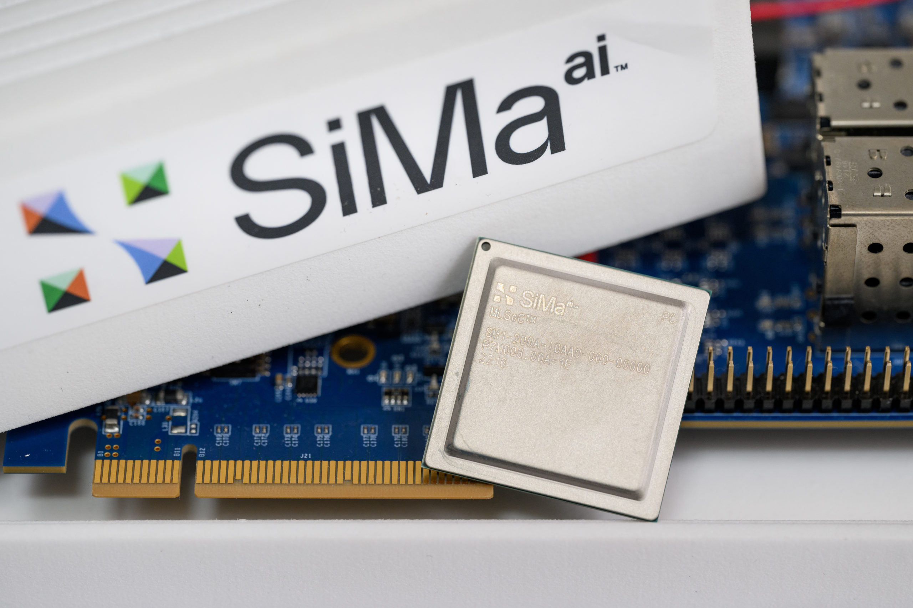
SiMa.ai / Business Wire
SiMa.ai融资一点五亿美元下场造芯
来源: SiMa.ai / Business Wire · 2026-09-29 · 原文链接
边缘Physical AI芯片公司SiMa.ai完成1.5亿美元C轮融资，累计融资5亿美元，估值14.5亿美元；Fidelity与Amplify共同领投。资金将用于机器人、汽车、无人机和工业设备上的低功耗推理平台，以及Palette Neat开发环境与下一代Modalix MLSoC。市场规模预测来自第三方研究，不能等同于公司订单。
Janet 锐评：
机器人需要的是瓦特、延迟和温度里的答案，不是数据中心跑分。SiMa.ai拿到的钱说明资本愿意为边缘推理再押一套芯片栈；能否穿过漫长验证周期、把开发工具做顺，才决定14.5亿美元估值是入口还是终点。
Presto
Presto再拿一千万美元守住得来速
来源: Presto · 2026-09-29 · 原文链接
餐饮语音AI公司Presto Phoenix获得1000万美元新资金，来自Remus Capital关联投资者及其他现有投资者，用于扩大快餐得来速场景的部署、产品和运营。公司强调与Toast、ElevenLabs和Bluejay等合作，并称已在高复杂菜单环境运行；公告没有披露本轮估值、收入或独立准确率数据。
Janet 锐评：
得来速是语音Agent最残酷也最诚实的考场：发动机噪声、口音、改口和排队压力都不会配合演示。1000万美元不算巨轮，反而提醒市场进入交付期——谁能在晚高峰少错一单、少让员工救一次场，谁才有续约资格。